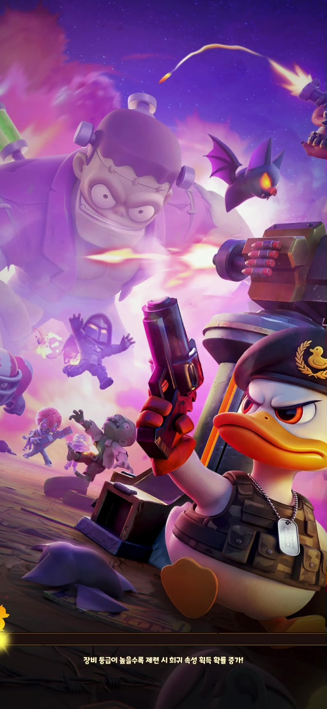

전투, 기지 건설,
그리고 성장.
적을 피하며 공격하는 것만으로는 기지를 지킬 수 없다. 건물을 세우고, 영웅에 맞춰 스킬을 강화하고, 전선을 유지해야 한다. 이 글이 가장 주목하는 것은 영웅과 스킬의 연계다. 전투와 건설은 이 연계가 힘을 쓸 자리를 만들고, 결과창은 그 효과를 숫자로 보여준다.
분석 읽기 ↓
준비 → 전투 → 결과 → 다음 도전
준비
장비와 영웅을 편성하고
골드로 방어 시설을 갖춘다.
전투
위치를 잡고 적을 막으며
레벨업마다 스킬을 선택한다.
결과
피해량을 확인하고
전투 보상을 받는다.
진행
구성을 바꿔 재도전하거나
다음 스테이지로 넘어간다.
피하는 방향에도 이유가 있다
플레이어의 체력과 기지의 상태를 함께 신경 써야 한다. 그래서 이동은 단순한 회피 이상의 선택이 된다.
기본 전투는 이동하면서 적을 공격하고, 필요할 때 액티브 스킬을 사용하는 방식이다. 개별 적을 일일이 조준하는 부담이 적어, 시선은 자연스럽게 적의 밀집 방향과 이동할 공간으로 향한다.
하지만 멀리 도망가는 것만으로 해결되지는 않는다. 적이 기지까지 내려오면 캐릭터가 살아 있어도 방어가 무너진다. 앞에서 적을 줄일지, 포탑 근처로 물러날지, 기지 쪽으로 빠진 적을 처리할지 판단해야 한다.
공격이 겹치는 위치를 잡는 재미
성벽 앞에서는 캐릭터의 스킬, 영웅의 공격, 포탑의 사격이 같은 적 무리를 향한다. 이 구간에서 광역 공격이 반복되면 적을 개별적으로 상대할 때보다 전투 효과가 뚜렷하게 보인다. 내 공격만 잘 맞추는 것보다 여러 공격 수단이 함께 일하도록 자리를 잡는 일이 중요해진다.
오른쪽 액티브 스킬은 사용 후 약 20초를 기다려야 한다. 당장 적을 줄이는 데 쓸 수도 있고, 더 큰 무리가 접근할 때까지 남겨둘 수도 있다. 이동 중심의 전투에 짧은 타이밍 판단이 추가되는 셈이다. 이렇게 겹치는 공격의 중심에 서는 것이 03에서 다룰 영웅과 스킬의 연계다.
전투 사이의 준비가 다음 방어를 바꾼다
낮에는 골드를 쓰고, 전투에서는 그 결과를 확인한다. 건설과 전투가 분리된 메뉴가 아니라 하나의 흐름으로 이어진다.
준비 구간에는 건설 위치와 비용이 표시된다. 생존자 캠프는 낮이 되면 골드를 주고, 포탑과 성벽은 전투를 버티는 데 쓰인다. 같은 골드를 수입 확보와 당장의 방어에 나눠 쓰는 구조다.
이 차이가 건설의 고민을 만든다. 수입을 늘리는 쪽에 먼저 투자하면 이후 준비에 쓸 자원이 생기지만, 바로 다음 전투의 화력이 부족할 수 있다. 반대로 방어 시설을 먼저 갖추면 당장의 전선은 보강되지만 다른 건설에 쓸 골드는 줄어든다.
기지가 커지는 모습이 보상으로 작동한다
초반의 작은 기지 주변에 포탑이 늘어나고, 전방에 성벽이 생기며, 건물 외형도 바뀐다. 능력치 숫자를 보지 않아도 얼마나 준비했는지 알아보기 쉽다. 플레이어가 만든 방어선이 실제 적을 상대하기 때문에 건설의 결과도 바로 드러난다.
전투 버튼을 누르기 전 잠시 멈춰 비용과 시설을 살펴볼 수 있다는 점도 좋다. 적을 피하느라 바빴던 구간 뒤에 판단할 시간을 주고, 준비를 마친 다음 다시 긴장도가 올라간다. 이렇게 세운 방어선은 영웅과 스킬이 적 무리를 정리할 시간을 벌어 주는 역할도 한다.
영웅을 편성하면 스킬을 고르는 이유도 달라진다
이번 구성의 핵심은 회전 칼날과 영웅의 연계다. 스킬을 따로 모으는 데서 끝나지 않고, 편성한 영웅을 기준으로 성장 방향을 잡게 한다.
레벨업하면 세 가지 스킬 중 하나를 고른다. 신규 스킬을 얻을 수도 있고 이미 가진 스킬을 강화할 수도 있다. 회전 칼날은 범위·피해·지속시간, 고드름은 발사 수·빙결 효과처럼 단계별로 다른 개선을 제시한다.
눈에 띄는 부분은 회전 칼날 아래의 ‘링크’ 표시다. 영웅의 고유 패시브인 ‘분열의 칼날’이 연결돼 있으며, 회전 칼날이 추가 소형 칼날 3개로 분열한다고 설명한다. 실제 전투에서도 큰 칼날 주변에 작은 칼날들이 함께 나타난다.
이렇게 되면 회전 칼날을 반복해서 고르는 데 구체적인 이유가 생긴다. 단순히 익숙한 스킬이어서가 아니라, 영웅의 효과까지 활용할 수 있기 때문이다. 영웅 편성이 전투 밖의 준비라면, 스킬 선택은 그 준비를 전투 안에서 완성하는 과정이다.
회전 칼날 · 범위 공격과 연계 강화
범위 안의 적에게 피해를 주고, 반복 선택으로 범위·피해·지속시간을 개선한다. 영웅의 분열 효과가 붙어 다수의 적을 상대하는 구성을 만들었다.
극한의 고드름 · 피해와 빙결
처음에는 고드름 2개와 2초 빙결로 제시된다. 이후에는 개수가 늘어나고 빙결 지속시간을 3초로 늘리는 선택지가 나온다. 공격력 외에 적의 접근을 늦추는 역할도 있다.
썬더 꼬꼬 · 병사 소환
번개 피해를 주는 병사를 소환하며, 강화 선택에는 병사 수 증가가 등장한다. 직접 공격과 별도로 전투에 참여하는 공격 수단을 추가한다.
화면 오른쪽의 스킬 목록과 별 표시는 한 판 안에서 쌓은 성장을 정리해준다. 회전 칼날은 후반에 주황색 이펙트로 바뀌고 여러 칼날이 전장을 덮는다. 강화 결과가 피해 숫자뿐 아니라 화면에서도 드러나므로 성장 체감이 빠르다.
일반 적을 처리하다가 보스까지 상대하게 된다
준비 구간은 숨을 돌릴 시간을 주고, 엘리트와 보스는 익숙해진 전투에 다시 압박을 더한다.
웨이브가 진행될수록 적의 무리가 커지고, ‘엘리트 등장’ 안내와 함께 강한 적이 섞인다. 후반 보스전에서는 큰 적을 상대하는 동안 주변 적과 투사체도 함께 신경 써야 한다. 하나의 목표에만 집중하기 어려워지는 구간이다.
보스가 성벽까지 접근하면 앞에서 공격하던 캐릭터가 뒤로 물러난다. 이때 후방의 포탑과 기지는 계속 화면에 남아 있다. 앞서 마련한 시설이 배경이 아니라, 밀려났을 때 전투를 이어갈 기반으로 기능한다.
긴장과 화력 증가가 같이 진행된다
적만 계속 강해지면 피로해지기 쉽다. 여기서는 그 사이에 레벨업과 스킬 강화가 끼어들어 공격 범위와 공격 수단도 늘어난다. 더 큰 무리를 상대하면서 동시에 더 많은 적을 타격하는 모습을 보게 된다.
상단의 웨이브 표시는 현재 위치와 남은 진행을 보여준다. 지금 전투만 버티면 되는지, 뒤에 더 큰 적이 남아 있는지 가늠할 수 있어 한 판 안의 목표를 유지하는 데 도움이 된다.
실패한 판과 클리어한 판의 차이
두 플레이에서는 영웅, 스킬 성장, 방어 시설이 함께 달라졌다. 한 가지 조작보다 준비한 구성 전체의 차이가 눈에 띈다.
| 구분 | 실패한 플레이 | 클리어한 플레이 |
|---|---|---|
| 기지 방어 | 적이 기지 주변까지 내려와 공격하고, 기지 파괴로 종료된다. | 성벽과 여러 포탑을 갖춘 전선에서 후반 웨이브와 보스를 상대한다. |
| 스킬 성장 | 회전 칼날을 강화하지만 전투 레벨 4에서 끝난다. | 회전 칼날을 집중 강화하고 빙결·소환을 더한다. 전투 레벨은 Max까지 도달한다. |
| 영웅 참여 | 결과창의 영웅 피해량이 0으로 표시된다. | 영웅이 함께 싸우고, 회전 칼날과 연결되는 패시브가 표시된다. |
| 전투 결과 | 기지 피격 경고 이후 방어가 무너진다. | 마지막 웨이브를 마친 뒤 승리 화면과 다음 스테이지가 열린다. |
실패한 판의 기록에서는 세 가지 공백이 함께 보인다. 성벽 없이 포탑만으로 전선을 지켜 적이 기지 앞까지 쉽게 내려왔고, 스킬 성장은 전투 레벨 4에서 멈췄다. 결과창의 영웅 피해량도 0이어서 캐릭터와 포탑만으로 적 무리를 감당해야 했다. 클리어한 판에서 공격을 나눠 맡던 성벽·영웅·추가 스킬이 모두 빠진 상태였던 셈이다.
특히 클리어한 판은 캐릭터 혼자 적을 처리하는 부담이 줄어든 구성이다. 영웅과 건물이 공격을 보태고, 강화한 스킬이 다수의 적을 타격한다. 여러 시스템에 투자한 결과를 한 전투에서 확인할 수 있다는 점이 이 게임의 성장 재미다.
다만 두 판은 시작 능력치와 영웅 편성부터 다르다. 그래서 이 비교만으로는 승리가 플레이어의 전략적 선택 덕분인지, 능력치가 올라간 덕분인지 구분할 수 없다. 이 비교가 보여주는 것은 장비·영웅·건설·스킬이 함께 전투 결과에 관여한다는 구조까지다. 어떤 선택이 얼마나 결정적이었는지는 같은 조건에서 선택만 바꿔 비교해야 확인할 수 있다.
무엇이 잘 싸웠는지 결과창이 보여준다
클리어 여부만 알리는 대신, 스킬·건물·영웅·캐릭터의 피해량을 나눠 보여준다.
| 공격 주체 | 이번 클리어 피해량 |
|---|---|
| 스킬 | 1.86M |
| 건물 | 1.13M |
| 영웅 | 641.43K |
| 캐릭터 | 187.23K |
이번 결과에서는 스킬 피해량이 가장 크고, 건물이 그다음이다. 캐릭터의 직접 공격보다 다른 공격 수단의 기여가 크게 나타난다. 건설과 스킬 선택이 부가 기능이 아니라 전투의 상당 부분을 담당한다는 것을 확인할 수 있다.
이 구분은 다음 준비에도 쓸모가 있다. 건설에 쓴 자원이 실제로 공격에 기여했는지, 편성한 영웅이 얼마나 참여했는지 돌아볼 근거가 생긴다. 다만 빙결로 번 시간이나 성벽이 버틴 역할까지 피해량에 담기지는 않으므로, 숫자만으로 모든 선택의 가치를 판단할 수는 없다.
클리어 직후 다음 목표를 제시한다
승리 보상에는 경험치 2.4K, 녹색 재화 5.14K, 이벤트 아이템 5개가 표시된다. 확인 버튼을 누르면 다음 스테이지인 ‘4-망각의 마을 I’로 넘어간다. 현재 목표를 끝낸 직후 다음 장소와 시작 버튼이 보이므로 진행이 끊기지 않는다.
실패 후에는 성장과 편성을 바꿔 같은 구간에 재도전하고, 성공 후에는 보상을 챙겨 다음 구간으로 이동한다. 서로 다른 결과에 각각 다음 행동을 붙여 둔 구성이다.
시스템 간 연결은 좋고, 후반 화면은 복잡하다
건설·편성·스킬이 전투 안에서 연결되는 점은 강점이다. 후반의 화면 가독성과 반복 선택을 유도하는 안내는 아쉬움으로 남는다.
잘 연결된 세 가지
첫째, 건설의 결과가 다음 전투에서 바로 드러난다. 둘째, 영웅의 패시브가 스킬 선택에 이유를 만든다. 셋째, 클리어 결과창이 각 공격 수단의 기여를 보여준다. 준비한 내용을 전투에서 사용하고, 결과로 돌아보는 과정이 이어져 여러 성장 시스템이 따로 놀지 않는다.
선택을 돕는 안내와 선택을 좁히는 안내
‘Hot’ 표시와 링크 설명은 처음 보는 스킬을 고를 때 도움이 된다. 특히 링크는 추천하는 이유까지 제시한다. 반면 이미 영웅과 연결되는 스킬이 눈에 띄게 강조돼 있어, 새로운 조합을 시험하기보다 같은 스킬을 계속 강화하는 쪽으로 선택이 기울기 쉽다.
개선안 링크 스킬 강조는 유지하되, 아직 고르지 않은 스킬에도 다른 영웅과의 조합이나 상황별 쓰임새를 짧게 보여주면 새로운 조합을 시험해 볼 이유가 생긴다.
성장 체감과 정보 가독성의 충돌
후반에는 회전 칼날, 얼음, 소환 병사, 적, 피해 숫자가 한꺼번에 겹친다. 공격이 강해졌다는 느낌은 분명하지만, 캐릭터와 적의 체력이나 위험한 투사체를 구분하기는 초반보다 어렵다. 전투 효과가 커지는 만큼 중요한 정보가 묻히는 구간도 생긴다.
개선안 스킬 이펙트를 반투명하게 하거나 설정에서 이펙트 강도를 고를 수 있게 하고, 캐릭터 체력바와 위험한 투사체는 이펙트 위에 또렷한 외곽선으로 표시하면 화려함과 판단 정보를 함께 지킬 수 있다.
보상과 상품 노출의 간격
장비 강화와 영웅 획득은 다음 전투에서 써볼 이유를 준다. 다만 실패 뒤 초보자 장비팩이 노출되는 흐름은 전투 결과를 돌아보는 시간을 끊는다. 성장 안내와 구매 안내가 가까이 배치돼 있다는 점은 이 게임의 장점인 빠른 진행과 동시에 맞물리는 아쉬움이다.
개선안 실패 직후에는 공격 주체별 피해량과 재도전 추천 구성을 먼저 보여주고, 장비팩은 성장 화면이나 상점에 들어갈 때 노출하면 결과를 돌아보는 흐름을 끊지 않는다.